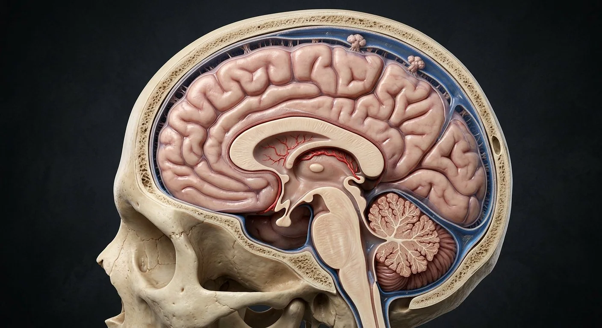

How this part of the body works
Cranial dura has periosteal and meningeal layers that separate at dural venous sinuses and create falx/tentorium folds. The arachnoid bridges across sulci; CSF occupies the subarachnoid space between arachnoid and pia, which closely follows brain contours. Choroid plexus secretes much CSF into ventricles: lateral → interventricular foramina → third → cerebral aqueduct → fourth → median/lateral apertures → subarachnoid cisterns. Arachnoid granulations drain much of it to dural sinuses, alongside other clearance routes. The subdural space is a potential pathologic space, not the normal CSF compartment.
Read the anatomy, part by part
These 18 structures correspond to the chapter’s regional illustration or schematic. Each entry separates location, function and a clinical point.
Periosteal cranial dura
Outer cranial dural layer adherent to inner skull.
What it doesForms tough outer covering and part of sinus walls.
Clinical connectionSpinal epidural space differs from cranial periosteal interface.
Meningeal cranial dura
Inner tough dural layer reflecting as falx and tentorium.
What it doesPartitions cranial cavity and surrounds sinuses.
Clinical connectionDural folds constrain mass displacement.
Falx cerebri
Vertical sickle-shaped dural sheet between hemispheres.
What it doesSupports superior and inferior sagittal sinuses.
Clinical connectionBridging veins cross toward its superior sinus.
Tentorium cerebelli
Dural roof over cerebellum with tentorial notch around midbrain.
What it doesPartitions supratentorial and infratentorial spaces.
Clinical connectionHerniation at notch threatens brainstem.
Superior sagittal sinus
Midline dural channel at upper attached edge of falx.
What it doesReceives superficial cerebral veins and arachnoid granulation drainage.
Clinical connectionSinus thrombosis impairs venous outflow.
Straight sinus
Sinus at falx–tentorium junction receiving inferior sagittal and great cerebral venous drainage.
What it doesTransfers deep cerebral venous return posteriorly.
Clinical connectionDeep venous obstruction affects thalami.
Transverse sinus
Paired channels from confluence toward sigmoid sinuses.
What it doesDrain toward internal jugular veins.
Clinical connectionDominance may be asymmetric normally.
Arachnoid mater
Thin membrane deep to dura spanning over sulci; trabeculae bridge to pia.
What it doesBounds CSF-filled subarachnoid space.
Clinical connectionBlood in subarachnoid space can irritate meninges.
Subarachnoid space
True CSF-filled space between arachnoid and pia containing vessels.
What it doesBathes brain and spinal cord.
Clinical connectionSite of lumbar puncture below spinal cord termination.
Pia mater
Delicate vascular membrane closely following gyri, sulci and cord surface.
What it doesInvests nervous tissue and supports pial vessels.
Clinical connectionUnlike arachnoid, pia follows sulcal contours.
Choroid plexus
Vascular core with specialized epithelial covering in ventricles.
What it doesSecretes much of cerebrospinal fluid and forms blood–CSF barrier.
Clinical connectionCSF production is not confined to one ventricle.
Lateral ventricles
Paired curved cavities of cerebral hemispheres.
What it doesDrain through interventricular foramina into third ventricle.
Clinical connectionObstruction can enlarge upstream ventricle.
Interventricular foramina
Paired openings commonly called foramina of Monro.
What it doesConnect lateral ventricles to third ventricle.
Clinical connectionFocal obstruction causes asymmetric ventricular dilation.
Third ventricle
Midline cavity between diencephalic structures.
What it doesConducts CSF to cerebral aqueduct.
Clinical connectionBorders include thalamus and hypothalamus.
Cerebral aqueduct
Narrow midbrain passage between third and fourth ventricles.
What it doesMaintains ventricular CSF continuity.
Clinical connectionAqueductal stenosis can cause obstructive hydrocephalus.
Fourth ventricle
Dorsal brainstem cavity anterior to cerebellum.
What it doesEmpties into subarachnoid space by median and lateral apertures.
Clinical connectionMass near outlet may obstruct CSF flow.
Subarachnoid cisterns
Enlarged CSF spaces such as cerebellomedullary cistern.
What it doesAllow circulation around brainstem and cerebellum.
Clinical connectionCistern compression matters on brain imaging.
Arachnoid granulations
Arachnoid projections into dural venous sinuses.
What it doesMajor route for CSF movement toward venous blood.
Clinical connectionOther meningeal lymphatic/clearance paths also exist.
Deeper structures and tissue layers
These 2 additional entries give anatomical context. They are deliberately not assigned a photographic pin on the regional image.
Sigmoid sinus
Curved dural venous channel continuing transverse sinus to jugular bulb.
What it doesDrains cranial venous blood into internal jugular vein.
Clinical connectionMastoid disease can be adjacent to its wall.
Bridging cerebral veins
Veins crossing subarachnoid and dural border region toward dural sinuses.
What it doesDrain superficial cerebral cortex.
Clinical connectionTearing can lead to subdural hematoma.
Five questions about Meninges, CSF & venous sinuses
Short answers grounded in the structures described above. Use the illustrated guide for anatomical context.
What are the three meninges around the brain?
From outside inward they are dura mater, arachnoid mater and pia mater. Cerebrospinal fluid occupies the subarachnoid space.
Where does cerebrospinal fluid flow?
CSF circulates through the ventricles and subarachnoid spaces before being returned to venous or lymphatic drainage pathways.
What is the periosteal cranial dura?
Outer cranial dural layer adherent to inner skull. Function: Forms tough outer covering and part of sinus walls.
Where is the falx cerebri located?
Vertical sickle-shaped dural sheet between hemispheres. Function: Supports superior and inferior sagittal sinuses.
What is the function of the superior sagittal sinus?
Function: Receives superficial cerebral veins and arachnoid granulation drainage. Midline dural channel at upper attached edge of falx.
Related anatomy guides
Follow these connected structures and body systems in the illustrated atlas.
 BrainMidsagittal section: cerebrum, diencephalon, brainstem and cerebellum around the ventricular system.↗
BrainMidsagittal section: cerebrum, diencephalon, brainstem and cerebellum around the ventricular system.↗ Cerebrum · cortex & deep pathwaysTrace cortex, white matter, corpus callosum, basal nuclei and thalamus on a realistic coronal section.↗
Cerebrum · cortex & deep pathwaysTrace cortex, white matter, corpus callosum, basal nuclei and thalamus on a realistic coronal section.↗ Brainstem & cerebellar circuitryLocate brainstem levels, cranial-nerve nuclei, pyramids and cerebellar peduncles, cortex and nuclei.↗
Brainstem & cerebellar circuitryLocate brainstem levels, cranial-nerve nuclei, pyramids and cerebellar peduncles, cortex and nuclei.↗ Spinal cordCross-section: a grey butterfly inside white tracts, wrapped in three meninges.↗
Spinal cordCross-section: a grey butterfly inside white tracts, wrapped in three meninges.↗Further reading
General anatomy references and related source chapters for continued study. These links do not make the digital illustrations clinical images or certify every anatomical variant.
This educational material does not provide medical advice, diagnosis or treatment. A named clinical reviewer has not been claimed for this page.
Open the interactive plate, pins, animated schematic and self-test.